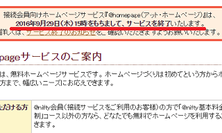
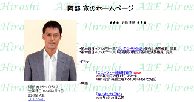

ニフティの無料ホームページが2016年にサービス終了
1999年から運営されていたニフティーの無料ホームページサービス「@homepage」が、2016年9月29日でサービス終了となります。

この@homepageは一般ユーザー向けではなく、ニフティーでプロバイダー契約をしている接続会員向けのサービスです。
有名なところでは俳優・阿部氏のホームページも@homepageで開設されており、日本を代表する俳優でありながら、素朴な作りのホームページがたびたび話題となることもありました。

この@homepageは老舗の無料ホームページサービスで累計60万サイトが開設されており、現在でも約17万件のサイトが存在しています。このうちの大部分が、2016年9月29日のサービス終了とともに消滅すると考えられています。
@homepage終了後のホームページの移転方法
既存ユーザーがどのようにホームページを移転しているのかをチェックしてみますと、概ね、独自ドメインを取得して移転している人が多いようです。
例えば、「@homepage」では以下の形で提供されています。
http://homepage1.nifty.com/アカウント名/
http://homepage2.nifty.com/アカウント名/
http://homepage3.nifty.com/アカウント名/
現在のところ、これらのURLにて「site:URL」で検索すれば、どのようなサイトが存在しているのかをチェックすることができますが、インデックス数が合計で約200万件程度あります。
site:http://homepage1.nifty.com/ 約514,000件
site:http://homepage2.nifty.com/ 約748,000件
site:http://homepage3.nifty.com/ 約785,000件
上記の検索でヒットするサイトをちらほら閲覧してみますと、すでにニフティー後継サービスを利用して運営している人もいるようです。後継サービスの「@niftyホームページサービス ミニ」は無料で利用することもできます。
そのほか、自分で独自ドメインを取得して他社のレンタルサーバーへ移転している人も多いと感じています。
いずれにしても、9月29日のサービス終了とともにサイトが削除されると、検索エンジンからも上記のインデックスが順次削除されていきますので、移転する際ははやめに対応されることをおすすめします。
@homepageでは301リダイレクトによる転送設定ができない
この@homepageからホームページを移転する際、本来なら旧サイトのhtaccessに301リダイレクト設定をして新サイトへの転送をするのがベストですが、9月29日には旧サイトが削除されてしまうため、この方法を使うことができません。
ただし、ニフティーの後継サービスとして「@niftyホームページサービス ミニ」が無料で用意されており、こちらを利用する場合は「移転通知の設定」が2018年3月29日までは利用できるようです。
そのため、旧サイトのURLにアクセスした際の「404 Not Found」を回避するには、後継サービスの「@niftyホームページサービス ミニ」に申し込んで「移転通知の設定」をするより他ないものと思われます。
ただ、上記のsite検索で既に移転通知機能を利用しているサイトを見てみましたが、この移転通知は301リダイレクトではなく、メタタグでの10秒リダイレクトになっていたため、この場合はステータスコードで「200 OK」が返ってきてしまうかと思います。
検索エンジンへ明確に移転を通知するには「301」を返さなくてはいけないため、これでは不十分かもしれません。メタタグリダイレクトでも、「0秒リダイレクト」なら301と同等とみなされる傾向がありますが、10秒でのリダイレクトはかなり微妙かと思います。
旧サイトへ貼られていた被リンクや運営年数などを新サイトへ引き継ぐためには、.htaccessによる301リダイレクトを設定する必要がありますが、このメタタグでの10秒リダイレクトではどこまで引き継がれるのかについては疑問があります。
また、今からニフティーで独自ドメインを取得して新サイトを作成したとしても、独自ドメインを使用した場合はこの「移転通知の設定」は指定できないようです。
もし、どうしても独自ドメインを使用したい場合には、とりあえずは無料の「@niftyホームページサービス ミニ」に申し込んで「移転通知の設定」を利用して引き継ぎ、そこからさらに独自ドメインとレンタルサーバーへ301リダイレクト設定するのが最良の方法かと思います。
このような無料サービスが終了する場合、htaccessでの301リダイレクトによる転送ぐらいはしてほしいものですが、たいていは転送設定ができずにサービスが終了してしまう傾向が多いです。
いずれにしても、無料ホームページや無料ブログサービスを利用する場合、このようなリスクがあるため、独自ドメインとレンタルサーバーを利用して運営されることをおすすめします。